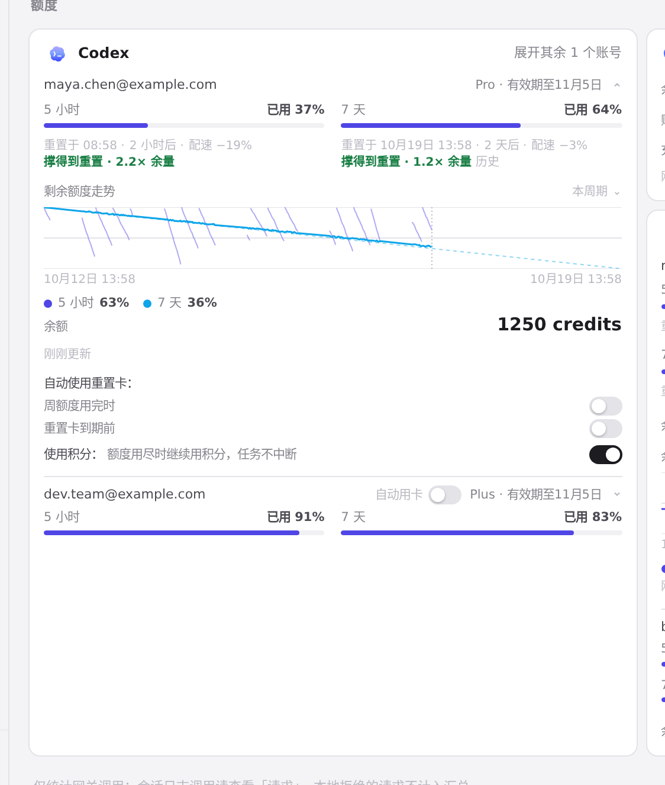
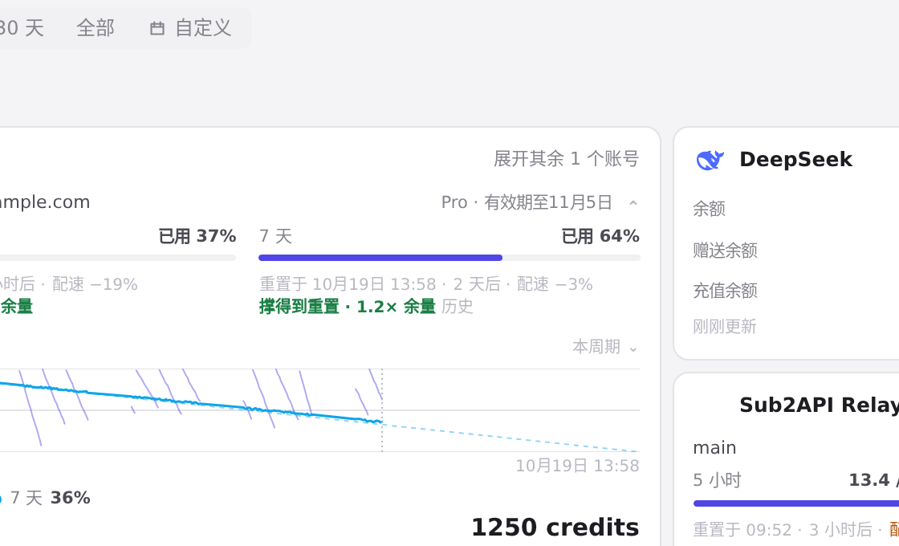
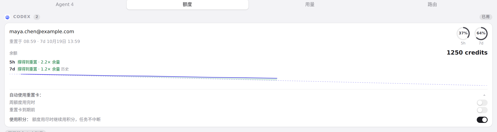

#977 界面预览
commit 44e1789 · 回到 PR · PR 在用量页的额度卡片和菜单栏托盘的额度卡片上新增预测行：撑得到重置（带余量倍数/历史标记）、预计用完或已用完，并补齐 zh、zh-TW、ja、de 文案与样式。
红线是鼠标走过的轨迹，红色圆环是一次点击；底部文字是这一步在做什么。空格暂停，← → 逐段查看。

用量页的额度预测 · Codex 额度卡片：每个窗口的重置与配速后多出的预测行

用量页的额度预测 · 「7 天」窗口的预测行末尾带「历史」标记

托盘额度页的预测行 · 托盘额度卡片圆环下方的按窗口预测行